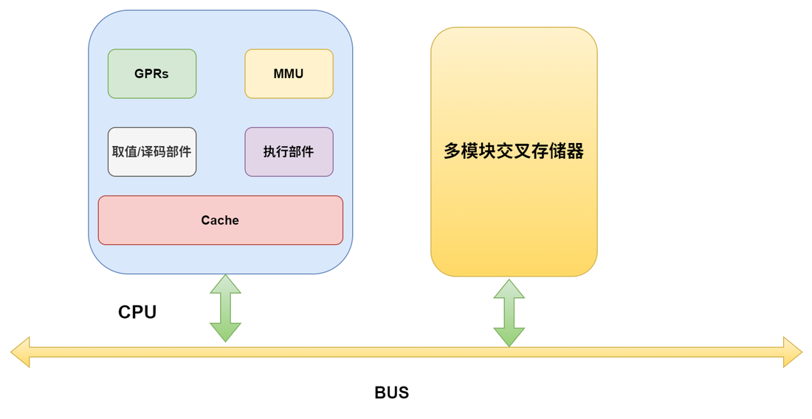
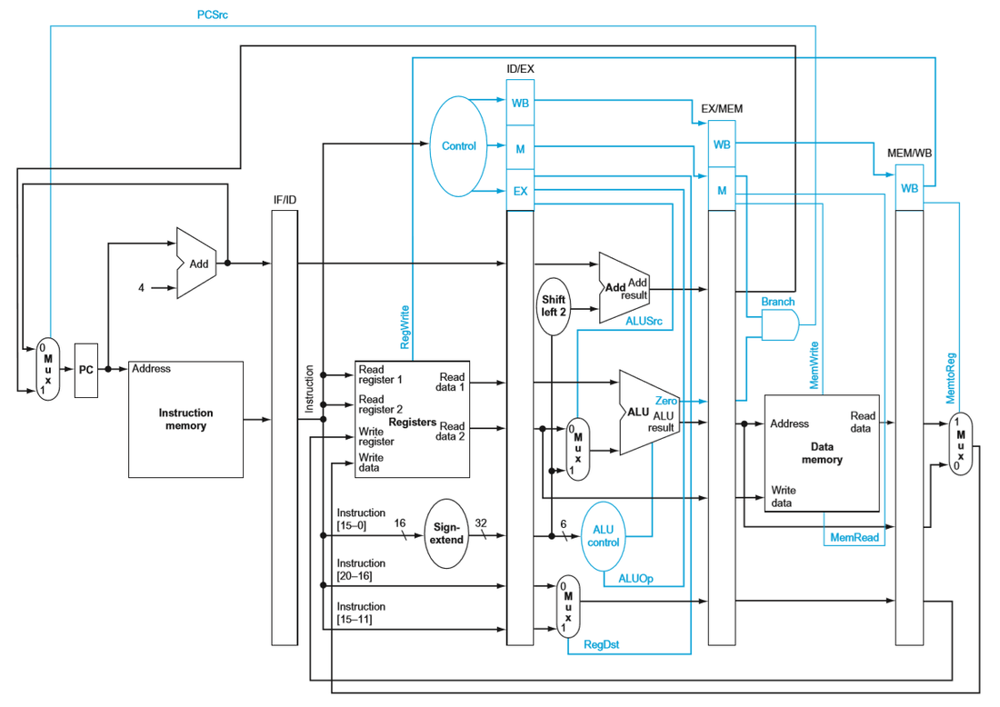
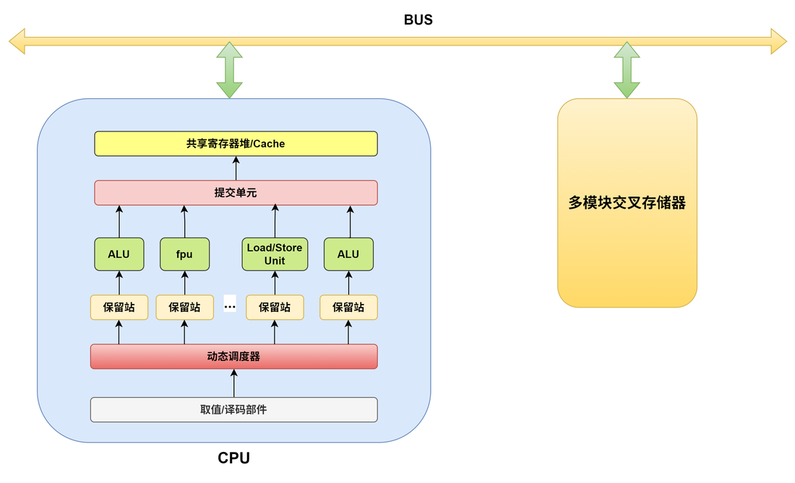
【考纲要求】多处理器基本概念
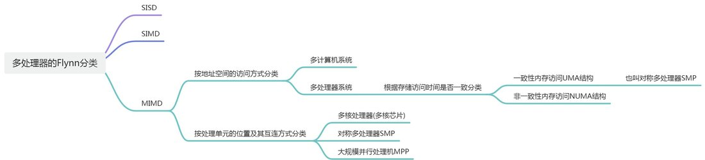
传统计算模型的核心是顺序执行，即计算机软件被分解为一系列指令，这些指令被送至单一的中央处理器（CPU）按顺序逐一完成 。这种模式的理论基础是冯·诺依曼体系结构，它定义了一种实现通用图灵机的计算设备，并作为一种相对于并行计算的序列式结构参考模型 。该结构最核心的特点之一是“存储程序”概念，即将程序指令与数据存储在统一的内存中，由处理器通过总线进行访问 。
然而，正是这种将处理器与存储器分离的设计，催生了现代计算中最根本的性能限制之一：冯·诺依曼瓶颈。随着半导体技术的发展，CPU的运算速度以远超内存访问速度的速率增长。这导致CPU与存储器之间的数据传输通道成为整个系统的瓶颈。CPU在等待从内存中获取指令或数据时，不得不进入闲置状态，极大地浪费了其强大的计算能力 。
1977年，计算机科学家约翰·巴科斯在其图灵奖演讲中深刻地指出，冯·诺依曼瓶颈不仅是一个硬件上的数据流量问题，更是一个“智能瓶颈”。它将我们的编程思维局限在“一次处理一个字（word-at-a-time）”的模式中，阻碍了我们思考更宏观、更并行的计算概念 。因此，为了突破这一物理和智力上的双重束缚，计算体系结构的发展必然走向并行化。
并行计算应运而生，它指的是许多指令或计算过程得以同时进行的计算模式 。通过将一个庞大而复杂的问题分解为多个可以同时处理的、较小的独立子任务，并利用多个处理单元协同求解，并行计算能够显著提高计算速度和系统的整体处理能力 。这种架构上的变革不仅仅是为了提升速度，更是为了解决那些在传统顺序计算模型下因耗时过长而无法企及的、更大规模、更复杂的问题，例如在科学计算、大数据处理和人工智能等领域的应用 。因此，并行处理从最初应对硬件瓶颈的被动策略，演变成为推动整个计算科学向前发展的核心驱动力，它重新定义了计算的边界，使得曾经被认为无法计算的问题成为可能。
为了系统地理解和设计并行系统，必须首先建立一个清晰的概念框架。并行性可以在多个维度上进行剖析，这些维度共同构成了并行计算的理论基础。
- 时间并行主要指指令流水线（Pipelining）技术。它将一条指令的执行过程分解为多个独立的阶段（如取指、译码、执行、访存、写回），并让不同指令的不同阶段在同一时刻重叠执行，就像工厂里的装配线一样 。虽然同一条指令的执行时间没有缩短，但单位时间内完成的指令数量（即吞吐率）得到了显著提升。
- 空间并行则是指使用多个独立的处理器或处理单元，在物理空间上同时执行计算任务 。这是当前并行计算研究和应用的主流形式，其核心思想是通过增加计算资源来换取性能的提升 。
- 数据并行是将一个大的数据集分割成多个部分，然后将相同的操作（任务）应用到每个数据子集上。例如，对一个大型图像的每个像素应用相同的滤镜效果。由于每个子任务执行的指令序列基本相同，只是处理的数据不同，因此数据并行模式通常更易于设计和管理 。
- 任务并行则是将一个复杂的计算任务分解为多个功能上不同的、可以独立执行的子任务。例如，在一个图形用户界面程序中，一个任务负责处理用户输入，另一个任务负责更新屏幕显示，还有一个任务在后台进行数据计算。这些任务可以并发执行，各自负责不同的功能 。
- 细粒度并行指的是计算任务被分解得非常小，处理器之间需要频繁地通信和同步。这种模式下，通信开销可能占据主导地位，抵消并行带来的性能增益。
- 粗粒度并行则将任务分解为较大的块，每个处理器可以长时间独立计算而无需通信。这种模式的通信开销较低，但可能导致负载不均的问题。选择合适的粒度是并行算法设计中的核心挑战之一。
- 并发是一个程序架构上的概念，指将一个程序设计成由多个可以独立运行的任务组成。这些任务可以交错执行（在单核处理器上通过时间片切换）或同时执行（在多核处理器上）。并发关注的是程序的逻辑结构和任务的分解 。
- 并行是一个程序执行上的概念，指多个任务在物理上同时运行。并行是实现并发的一种方式，但并非唯一方式。一个并发设计的程序不一定需要并行执行。例如，一个Web服务器采用并发模型处理多个客户端请求，在单核CPU上，这些请求处理任务是交错执行的；而在多核CPU上，它们可以并行执行 。简而言之，并发是关于“处理多件事情”的设计，而并行是关于“同时做多件事情”的实现。
为了对纷繁复杂的计算机体系结构进行系统性的归类，1966年，斯坦福大学的迈克尔·弗林（Michael J. Flynn）提出了一种影响深远的分类法，即弗林分类法（Flynn's Taxonomy）。该分类法基于两个核心维度对计算机架构进行划分：指令流（Instruction Stream） 的数量和数据流（Data Stream）的数量 。指令流指的是由处理器执行的指令序列，而数据流则是指由指令处理的数据序列。
通过这两个维度的组合，弗林将计算机体系结构划分为四种基本类型 ：
- 单指令流，单数据流（Single Instruction， Single Data， SISD）
- 单指令流，多数据流（Single Instruction， Multiple Data， SIMD）
- 多指令流，单数据流（Multiple Instruction， Single Data， MISD）
- 多指令流，多数据流（Multiple Instruction， Multiple Data， MIMD）
弗林分类法是一个高层次的抽象模型，其价值在于提供一个共通的语言和宏观的视角。它并未涵盖一些对现代并行系统性能至关重要的因素，例如存储器组织方式（共享内存 vs. 分布式内存）、处理器间的互连网络拓扑以及同步机制的实现等 。在弗林提出该分类的时代，处理器的计算能力是关注的焦点。而如今，数据移动的成本和内存访问的延迟往往成为性能的主要瓶颈。因此，对并行架构的现代分析必须在弗林分类法的基础上，进一步深入探讨这些它所忽略的关键细节。
弗林分类法体系结构对比分析
体系结构 | 指令流 | 数据流 | 核心原理 | 典型硬件示例 | 主流编程模型 |
SISD | 单一 | 单一 | 顺序处理 | 传统单核CPU、微控制器 | 顺序编程语言（如标准C/C++） |
SIMD | 单一 | 多个 | 数据级并行 | GPU、CPU向量单元（AVX， NEON）、向量处理器 | 向量化（自动或使用内建函数）、CUDA、OpenCL |
MISD | 多个 | 单一 | 冗余或流水线处理 | 容错系统（如航天飞机飞控计算机）、脉动阵列【袁书认为不存在这种计算机】 | 领域特定、专用算法 |
MIMD | 多个 | 多个 | 任务级并行 | 多核CPU、计算机集群、超级计算机 | 线程模型（OpenMP， Pthreads）、消息传递（MPI） |
SISD 是传统的串行计算机处理方式，这种计算机通常仅包含一个处理器和一个存储器，处理器在一段时间内仅执行一条指令流，按指令流规定的顺序串行完成指令流中若干条指令的执行，并且每条指令最多仅对两个数据(双目运算)或一个数据(单目运算)进行处理。这种架构的典范实现就是冯·诺依曼体系结构。
尽管纯粹的SISD机器在今天的高性能计算领域已不多见，但该模型在理解单线程性能方面仍然具有重要的概念意义。事实上，现代的单核处理器早已不是严格意义上的顺序机器。为了在不显著提高时钟频率的前提下提升性能，架构师们在SISD的框架内引入了指令级并行的概念，使得来自单一指令流的多条指令（好好体会一下单一指令流的含义）能够在微观层面上并发执行。
在20世纪末至21世纪初，提高处理器性能的主要手段是提升时钟频率。然而，随着晶体管尺寸的缩小，功耗密度急剧增加，导致散热问题日益严峻，这一物理瓶颈终结了单纯依靠频率提升性能的时代。为了继续遵循摩尔定律的性能预测，计算机体系结构的设计重心不得不从提高“每秒周期数”转向提高“每周期指令数”。指令级并行正是实现这一目标的关键技术。
实现指令级并行的主要技术包括：
因此，现代CPU虽然在宏观上仍然遵循冯·诺依曼的顺序执行模型，但在微观架构层面已经是一个高度并行的系统。它们通过复杂的乱序执行引擎和分支预测逻辑，动态地从指令流中挖掘并利用指令级并行。这种在SISD模型内部挖掘并行性的努力，可以看作是向更显式的并行架构（如SIMD和MIMD）演进的过渡阶段，它最大限度地压榨了单一指令流的性能潜力，直至多核MIMD架构成为不可避免的选择。
所以我们之前学的流水线、超长指令字（VLIW）、超标量、超流水线等正是现代高性能处理器在SISD（单指令流，单数据流） 这个基本架构模型下，用来压榨单一指令流性能潜力的主要技术。
SISD定义了计算机的宏观工作模式——处理一条指令流。而其他技术则是在这个模式内部，通过各种微观手段来寻找并利用并行性，以求“更快地”处理这条指令流。
超标量技术（Superscalar）发生在单个CPU核心（Single Core）内部，它需要的是多个“执行单元”，而不是多个“核心”。
一句话解释： 因为这些指令属于同一个程序（进程），只是从一个程序的指令流中挖掘出可以并行执行的部分，因此可以实现SISD”
我们可以用一个比喻来理解：
超标量处理器：就像一位能干的厨师（处理器硬件）。他看着同一份菜谱（单一指令流），发现“烧水”和“切菜”这两步没有依赖关系，于是他可以在让灶台区烧水的同时，自己跑到切菜区去切菜。在这个比喻里：
所以，超标量处理的依然是“单指令流”，它只是在这个单指令流内部，通过硬件的智能调度，找出可以并行执行的部分，因此它本质上仍然是对SISD模型的一种性能优化。
那超标量能实现SIMD或者MIMD吗？
超长指令字（VLIW） 如何压榨SISD架构的性能潜力，原因如下：
a = b + c; 和 x = y * z; 这两条指令就可以同时执行）。一个简单的比喻：
因为超长指令字（VLIW）技术的所有操作都是在一个单一的指令流内部进行的，它并没有引入多个指令流，所以它是一种典型的、用来加速SISD模型的技术。



SIMD(Single Instruction stream and Multiple Data stream)指一个指令流同时对多个数据流进行处理，这种结构的计算机通常由一个指令控制部件、多个处理单元和多个存储器组成。各处理单元和各存储器之间通过系统内部的互连网络进行通信。在程序执行过程中，指令控制部件执行的还是一个串行的指令流，所有处于执行状态的处理单元同时执行相同的指令，所需的数据从连接在各个处理单元上专用的局部存储器中取得，因此，不同处理单元执行的同一条指令所处理的数据是不同的。
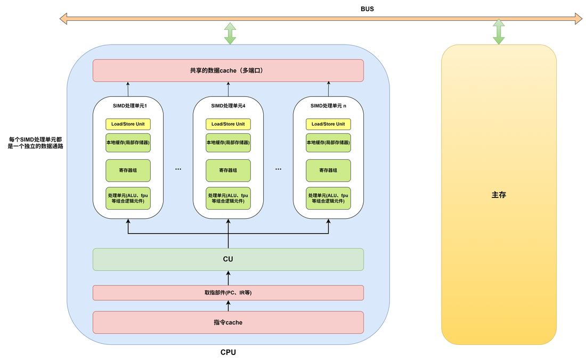
从图中我们可以看出 SIMD 核心思想是，由一个单一的控制单元发出的指令，可以被广播到多个处理单元，每个处理单元在同一时刻对各自不同的数据执行相同的操作 。这种执行模式，非常适合处理具有高度数据级并行的问题 。
SIMD 结构适合的使用场景：
for循环，其内部没有复杂的逻辑判断和跨迭代的依赖时，就可以尝试将这个循环“向量化”，即用几条SIMD指令来代替原来需要成百上千次迭代的标量指令，从而实现数量级的性能提升。向量处理机是一种专门为向量运算（对数组或向量进行批量操作）而高度优化的处理器。它的核心思想是用一条指令来启动对一整组数据（一个向量） 的一连串操作，从而极大地提高处理效率。它也属于SIMD的一种，专门面向数据级并行计算。
向量处理机与我们之前讨论的普通SIMD相比，有几个显著的不同：
VADD 指令就可以完成两个包含64个元素的向量的相加，而不需要像普通CPU那样编写循环。
假设我们要计算两个包含100个元素的数组 C = A + B。
A[i]、加载B[i]、计算A[i]+B[i]、存储结果到C[i]。总共需要数百条指令。VLOAD VA, A (将数组A加载到向量寄存器VA)VLOAD VB, B (将数组B加载到向量寄存器VB)VADD VC, VA, VB (将VA和VB相加，结果存入VC)VSTORE C, VC (将VC中的结果存回内存数组C) (注：如果向量长度超过寄存器长度，会自动分段处理)向量处理机因为其强大的并行计算能力，主要应用于对计算性能要求极高的领域，上面 SIMD 结构适合的使用场景它也可以，例如在空气动力学、原子物理学、核物理学、气象学和化学等科学计算中，涉及线性规划、傅里叶变换、滤波计算以及矩阵、线性代数、偏微分方程、积分等数学问题的求解（这些求解问题大都要求能对大量结构相同的数据进行高精度的浮点运算）
早期的超级计算机（如Cray系列）就是典型的向量处理机。虽然现在主流的通用CPU和GPU通过集成越来越强大的SIMD单元来执行向量运算，但纯粹的向量处理机架构在顶级超算领域依然因其高效的内存访问和能效比而占有一席之地。
袁书原话：可以看一下以做补充
- 向量处理机是面向向量型数据的并行计算机，在向量各分量上执行的运算操作一般都是彼此无关、各自独立的，因而可以按多种方式并行执行，有流水线方式和阵列方式两种，大多以流水线结构为主。主存储器容量的大小限定了机器的解题规模。向量处理机主要用于求解大型问题，必须具有大容量的主存，而且应该是集中式的公共存储器。当高速运算流水线运行时，需要源源不断地供给操作数和取走运算结果，还要求主存具有很高的数据传输率，否则便不能维持高速运算，因此，多采用多个端口同时读取的交叉多模块存储器。
- 向量处理机主要采用先行控制和重叠操作技术、运算流水线、多模块交叉访问的并行存储器等并行处理结构，从而能提高运算速度。向量型数据并行计算与流水线结构相结合，能在很大程度上克服通常流水线计算机中指令处理量太大、存储访问不均匀、相关阻塞严重、流水不畅等缺点，并可充分发挥并行处理结构的潜力，显著提高运算速度。
MIMD(Multiple Instruction stream and Multiple Data stream)指同时有多个指令分别处理多个不同的数据。这种系统中一定包含有多个计算机或多个处理器。MIMD方式是目前大多数并行处理计算系统的处理方式。
根据 Flynn 分类法,并行处理计算系统有 SIMD 和 MIMD 两种并行计算模式,其中SIMD是一种数据级并行模式,而 MIMD是一种并行程度更高的线程级并行或线程级以上并行计算模式。
MIMD架构的强大之处在于其能够同时支持数据并行和任务并行。不同的处理器可以执行完全不同的程序（任务并行），也可以执行同一个程序的不同部分来处理分布式的数据（数据并行的一种形式，常称为SPMD - Single Program， Multiple Data）。这种灵活性使其能够适应几乎所有类型的并行应用。
架构分类：多处理器与多计算机
根据处理器访问主存地址空间的方式，MIMD系统可以被清晰地划分为两大阵营：多处理器（Multiprocessor）系统和多计算机（Multicomputer）系统。这一划分不仅是硬件架构上的区别，更直接决定了并行编程的模型和挑战 。
在一个 CPU 芯片中包含多个处理单元,每个处理单元称为一个核(core),所有核可能共享一个 LLC(Last-Level Cache),并共享主存储器。通常将多核芯片称为片级多处理器(Chip-level MultiProcessing,CMP)。通常多核 CPU 芯片的核数为 2、4、8 等几种。
简单来说，多核CPU中的一个核心（Core） 就是一个完整且独立的简单 CPU。每个核心都具备独立执行程序所需的所有基本元件，包括：
因为具备了这些元件，所以每个核心都能独立地、完整地执行一个线程（一个指令流）。一个拥有8个核心的CPU，就可以在物理上真正地同时并行处理8个独立的任务（线程），这就是多核处理器性能强大的根本原因。
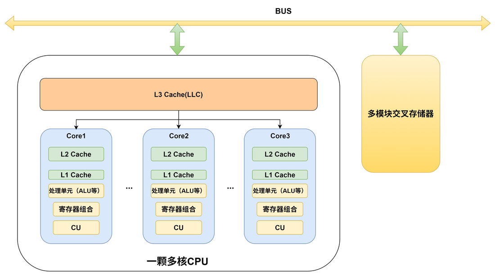
袁书给的定义：所谓对称多处理器SMP(SymmetricMultiProcessor)，是指将多个相同类型的CPU通过总线互连，并以等同地位共享系统所有资源，即，多个CPU对称工作，无主次或从属关系。因为各CPU共享相同的物理内存，每个CPU访问内存中的任何地址所需时间是相同的，因此，对称多处理器就是一种UMA结构多处理器。多核处理器系统、高档微机、工作站或服务器多用SMP结构。
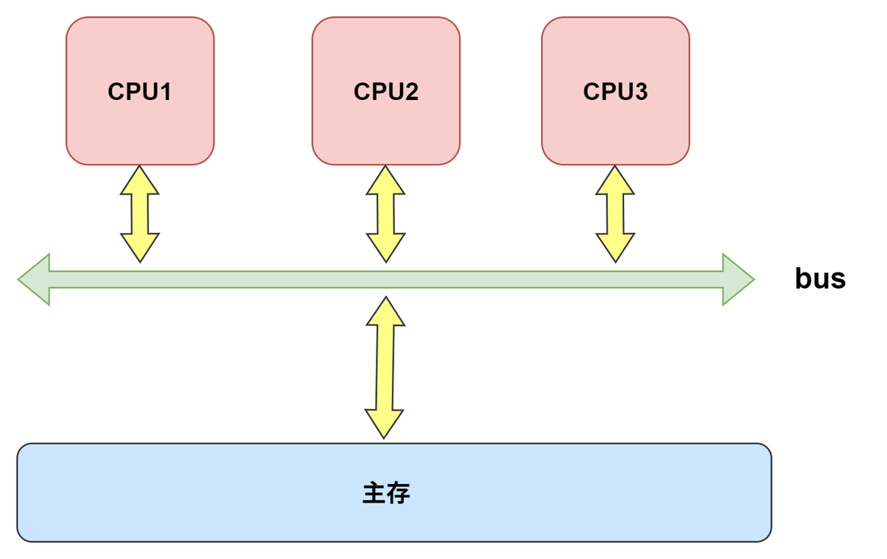
图中所示的是CPU中不带高速缓存（cache）的UMA多处理器系统，多个CPU模块通过总线与一个共享存储器相连。当某个CPU需要访问主存时，它首先检查总线是否忙。如果检测到总线忙，则等待，直到总线空闲；否则，该CPU通过总线与主存进行一次数据交换。显然，这种方式下，当CPU只是少数几个时问题不是很大，但是，当CPU个数很多时，就会经常发生多个CPU访问主存冲突问题，使得在很多时间内，大多数CPU都会因为总线忙而处于等待状态，导致CPU利用率极其低下。
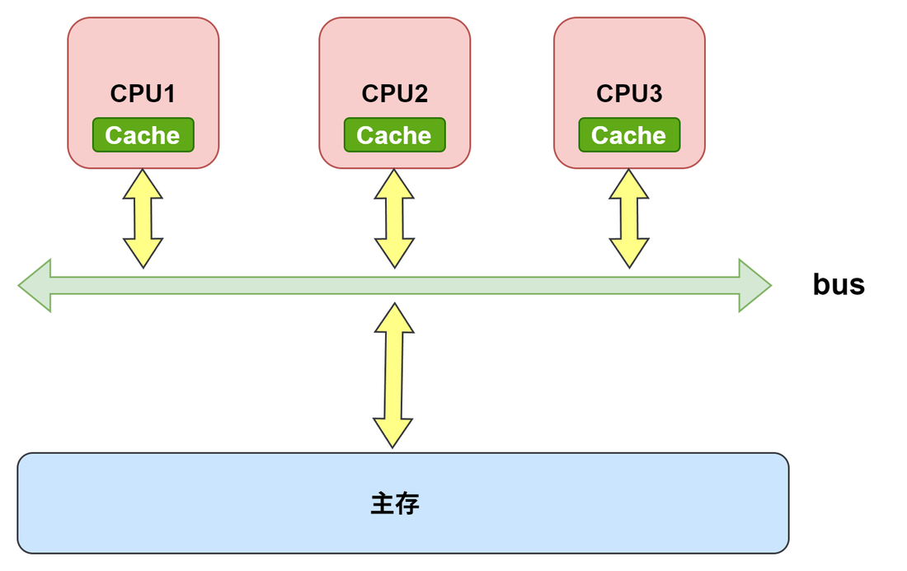
图 1 中的CPU利用率低下问题的解决方案是在CPU中加入高速缓存，其硬件结构如图 2 所示。在每个CPU模块中添加了高速缓存后，由于程序访问的局部性特点，使得CPU需要的信息大多可以在内部的高速缓存中访问到，因此，总线就不会太繁忙，因而，可以在总线上连接更多的CPU模块。
在CPU中添加高速缓存，在解决CPU利用率低下的同时，也会带来新的问题，那就是cache一致性问题。
因为每个CPU内的高速缓存中存放的是共享主存中的信息的副本，主存中的一个主存块有可能同时在多个CPU的高速缓存中，如果某个CPU修改了存放在本地高速缓存中的一个副本中的内容，那么就会发生与其他CPU中的副本以及主存中的副本不一致的情况，从而导致程序执行结果出错，这种现象称为cache一致性（cache coherency)问题
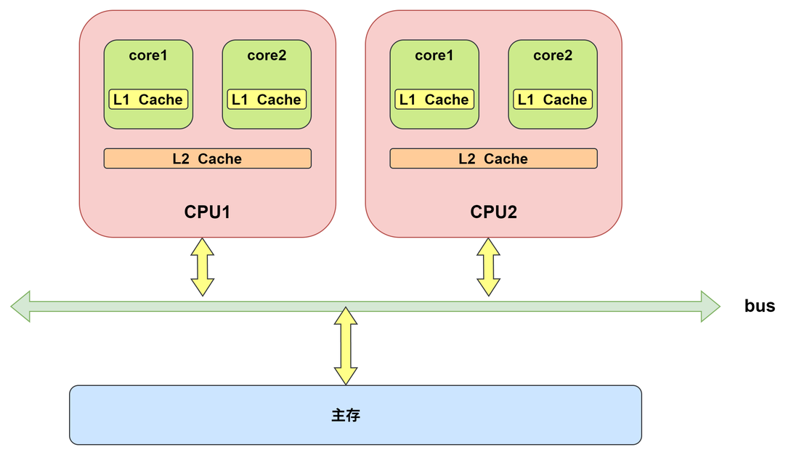
为了解决图 2 中的缓存一致性问题，一般采用 MESI 协议：如果某个核中的Cache中的数据被修改，则将修改信息广播到所有核中的Cache中。如果其他核的Cache中有这部分数据，则将这部分数据改为无效。修改Cache的核也必须将主存中的数据同步修改。
多核处理器和对称多处理器（SMP） 不是一回事，但它们之间有着非常紧密的关系。简单来说，多核处理器是实现对称多处理器系统的一种最现代、最主流的方式。
1. 对称多处理器 (Symmetric Multiprocessor, SMP)：这是一个系统架构层面的概念。它描述的是一个计算机系统，其中包含两个或多个物理上独立的、性能相同的处理器。
2. 多核处理器 (Multi-core Processor)：这是一个芯片实现层面的概念。它指的是在一个单独的物理芯片（一个CPU封装）内部，集成了两个或多个完整、独立的计算核心（Core）。这些核心被封装在同一个硅片上，它们天然地共享一些资源，比如L3缓存和通往主内存的通道，这使得它们之间的通信延迟极低，效率非常高。
区别与联系
核心联系：一个搭载了多核处理器的计算机，就是一个典型的对称多处理器（SMP）系统。例如，一台装有Intel Core i7（比如有8个核心）的电脑，就是一个SMP系统。因为这8个核心是平等的，它们共享主内存和I/O，并由同一个操作系统（如Windows或macOS）管理。
总结一下：
您可以这样理解：SMP是“多引擎汽车”这个概念，而多核处理器就像是“V8引擎”（一个单元内有8个气缸），而老式的SMP系统则像是“装了两台独立引擎的汽车”。它们都属于“多引擎汽车”，但物理实现方式不同。在今天，几乎所有的消费级和服务器SMP系统都是通过多核处理器来实现的。
MPP (Massive Parallel Processing) 是指以内联网络连接数量众多的处理单元构成的一种并行计算系统。例如，可以通过专用互连网络 (如 Mesh、交叉开关) 将数量达几百甚至几千个的对称多处理器 (SMP) 连接成大规模并行处理机。众多 SMP 服务器协同工作，完成相同的任务。因此从用户的角度来看是一个服务器系统，每个 SMP 服务器称节点，每个节点只能直接访问自己的本地资源 (内存、磁盘等)。大多数 MPP 是消息传递系统，共享存储 MPP 系统的典型代表是 20 世纪 90 年代风靡全球的 SGI Origin 2000，但与同期的消息传递 MPP 系统相比，由于其硬件的复杂性，其可伸缩性相对有限。
集群 (cluster) 指通过高性能网卡将若干个普通 PC 或 SMP 服务器或工作站连接而成的并行处理系统。集群中的每个计算节点 (PC、SMP 或工作站) 都有各自的内存储器和磁盘，主存地址空间都是计算节点各自私有的，因此，集群是一种典型的紧密耦合的同构多计算机系统。显然，集群属于消息传递系统。
网格 (grid) 是指用因特网等广域网络连接起来的远距离分布的一组异构计算机系统构成的分布式并行处理系统。它是一种松散耦合的异构多计算机系统。云计算 (cloud computing) 服务器就是由网格发展而来的。
多处理器系统是指一个拥有多个处理器的单一计算机，所有处理器共享一个统一的全局地址空间和内存 。任何处理器都可以通过加载和存储指令直接访问内存中的任何位置 。处理器之间的通信是隐式的，通过读写共享内存中的变量来完成，这种方式速度快且编程模型直观 。这类系统也被称为 紧耦合系统 (Tightly Coupled Systems)。
根据存储访问时间是否一致，多处理器系统又可分为两类：
这是最简单的共享内存模型，也称为对称多处理（Symmetric Multiprocessing， SMP）。所有处理器访问任何内存地址的延迟都是相同的 。典型的例子就是现代多核CPU，所有核心通过共享的总线或交叉开关连接到主内存 。UMA模型实现简单，但随着处理器数量的增加，共享总线会成为瓶颈，导致其可扩展性受限 。
袁书定义： UMA（UniformMemoryAccess)结构指每个处理器对所有存储单元的访问时间是一致的。如果所有处理器都共享一个存储器，那么，每个处理器通过LOAD指令和STORE指令访问任何一个存储单元，其访问时间是相同的。它是一种普遍使用的并行处理计算机结构。
示意图看 SMMP 那里的就够了，这里不画了。
为了解决UMA的可扩展性问题，NUMA架构将物理内存分布到各个处理器（或处理器组）附近，形成多个“节点” 。处理器访问其本地内存的速度非常快，而访问其他节点的远程内存则需要通过高延迟的互连网络，速度较慢 。NUMA架构提供了更好的可扩展性，但给程序员带来了新的挑战：为了获得最佳性能，必须精心管理数据的存放位置和线程的亲和性（affinity），尽量减少跨节点的内存访问 。
袁书定义： NUMA(Non-UniformMemoryAccess)结构指处理器对不同的存储单元的访问时间可能不一致，访问时间与存储单元的位置有关，若是本地存储器，访问时间就短；若是其他处理器所连接的存储器，则访问时间就长。如果在NUMA结构中引人高速缓存一致性确认机制，则称为高速缓存一致的非一致性内存访问(Cache-CoherentNUMA，CC-NUMA）。
在NUMA多处理器系统中，每个处理器都带有一个本地存储模块，与UMA一样，所有共享存储模块统一编址，以形成具有单一地址空间的一个逻辑存储器。只不过在UMA中必须保证访存时间一致，而在NUMA中处理器访问本地存储模块要快于对非本地存储模块的访问。因为所有本地存储模块和非本地存储模块都在同一个地址空间，因此，非本地存储模块也通过LOAD和STORE指令来访问。由此可见，NUMA计算机上运行的所有UMA程序无须做任何改变，但在相同的主频下其性能不如UMA计算机上的性能。
因为NUMA多处理器系统中共享的存储空间分布在不同的处理器节点上，因此，在节点互连、并行编程、cache一致性方面所遇到的问题与UMA多处理机不同。处理器中不带高速缓存时，系统被称为NC-NUMA（NoCacheNUMA)；处理器中带有一致性高速缓存时，系统被称为CC-NUMA。CC-NUMA多处理器系统必须考虑如何维持处理器cache的一致性，在CC-NUMA中最常见的是基于目录的cache一致性机制。
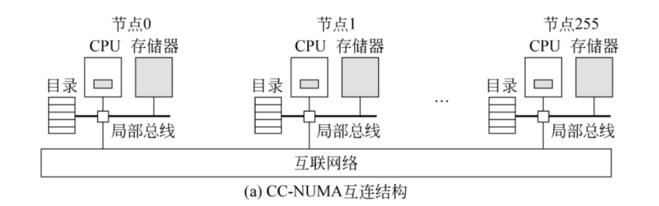
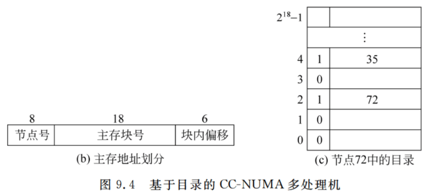
从图中可以看出，在CC-NUMA多处理器系统中，每个CPU都通过局部总线与本地存储器相连形成一个节点，每个CPU中有高速缓存，每个存储器中都有一个存放目录信息的存储区。所有节点通过某种互连网络进行互连。
基于目录的CC-NUMA多处理器结构的基本思想是，每个处理器采用一个目录来记录本地存储器中每个主存块与高速缓存中cache行的对应情况。每个主存块对应一个目录项，目录项中有专门的一位有效位，表示对应的主存块是否在某个cache行中
- 若该位为1，则表示在cache中，目录项中记录对应的cache行所在的节点号；
- 该位为0，则说明不在cache中。
图中所示的系统中共有256个节点，每个节点内的存储器大小为16MB，并且连续编址，因此，该系统总的主存空间大小为 。通用计算机的存储器都采用字节编址，因此，该系统的主存地址为32位，其中高8位为存储器号（即节点号），低24位为存储器内地址。
根据图9.4(b)中的主存地址划分，低6位为块内偏移（这里的“块”指主存与高速缓存交换的主存块），因此主存块大小为64B，每个存储器占 个主存块。因此，每个节点对应的目录中有 个目录项，同时图9.4(b)所示的主存地址低24位被分为两个字段，其中高18位为主存块号，它可以作为目录项的索引。
为了理解上述系统如何工作，现举一个例子：假定在节点18中的CPU执行了一条LOAD指令。首先，节点18中的MMU将LOAD指令指出的虚拟地址转换为物理地址（假设该物理地址为480000C8H，其高8位值为72，低24位值为200），说明该LOAD指令将读取节点72的存储器中200号单元开始的数据。因此，节点18中的MMU不会到本地存储器取数，而是把请求消息通过互连网络发送到节点72。 节点72接收到请求消息后，先查看目录：因主存地址中的主存块号为3，故查看目录项3，发现有效位为0（说明对应主存块不在任何cache行中）。
因此，节点72中的主存控制器将存储器中的3号主存块读出并传送到节点18，同时将第三目录项的有效位置1，节点号置为18（表示对应主存块被高速缓存在节点18中）。 如果LOAD指令访问的物理地址为48000108H，则请求消息中的主存块号为4，因此查看目录项4，发现有效位为1、节点号为35（说明对应主存块已被高速缓存在节点35）。此时，节点72中的主存控制器将目录项4的节点号改为18，并向节点35发送消息，指示节点35将高速缓存中的该主存块送到节点18，且使其自身高速缓存中对应的cache行无效。
多计算机系统由多个通过网络互连的自治计算机组成，每个计算机（节点）都拥有自己私有的、其他处理器无法直接访问的本地内存和处理器 。整个系统没有全局地址空间，每个处理器都有自己独立的地址空间 。这类系统也被称为 松耦合系统 (Loosely Coupled Systems)。
在弗林的分类中，多指令流单数据流（MISD）是最不常见、也最具争议的一类 。其定义是，多个处理单元使用不同的指令来操作同一个数据流 。这种计算模型在现实世界中极其罕见，因为绝大多数并行问题要么是需要将同一操作应用于大量数据（SIMD），要么是需要将不同操作应用于不同数据（MIMD）。MISD的应用场景非常狭窄，使其在很大程度上仍然是一个理论上的分类 。 （袁书：MISD 仅仅作为一种或理论模型提出，现实中根本不存在这样的计算机）
对MISD架构的深入分析揭示了一个与SIMD和MIMD截然不同的设计目标。SIMD和MIMD的核心目标是提升计算性能和吞吐量。而MISD在实际应用中的价值，并非源于加速计算，而是源于提升系统的可靠性和容错能力。
这个逻辑可以这样理解：对于一个通用的计算任务，让多个处理器对同一个数据执行不同的指令是低效的。然而，如果这个数据流是至关重要的、不容出错的（例如来自飞行器传感器的实时数据），那么情况就完全不同了。在这种安全攸关的场景下，可以设计多个独立的处理器，用不同的算法或同一算法的不同实现来同时处理这个数据流。处理器A执行检查算法#1，处理器B执行检查算法#2，处理器C执行主控制算法。然后，通过一个表决机制比较它们的输出结果。如果结果一致，则系统正常；如果出现分歧，则表明可能存在软件缺陷或硬件故障。
因此，“多指令流”在这里的目的不是为了并行分解一个计算任务，而是为了在处理单一关键数据源时，创造冗余（Redundancy）和多样性（Diversity）。这种设计理念将MISD的应用领域从通用计算转向了高可靠性系统，在这些系统中，正确性和安全性是压倒一切的首要目标。
尽管MISD架构非常罕见，但仍有经典的例子可以帮助我们理解其概念。
首先，我们需要理解它要解决的问题。现代处理器速度极快，但它们经常需要等待速度较慢的内存系统。当处理器遇到需要从主存加载数据的指令（如缓存未命中，Cache Miss）或长的流水线暂停时，它会进入停顿（Stall） 状态，成百上千个时钟周期被白白浪费。
硬件多线程（Hardware Multithreading） 是一种允许单个物理处理器核心同时管理多个线程状态的技术。操作系统会认为这一个物理核心是多个“逻辑核心”。当一个线程因为停顿而无法继续执行时，处理器核心可以快速切换到另一个已准备好的线程，利用原本会被浪费的时钟周期去执行它的指令。
其核心思想是：通过线程级的并行（Thread-Level Parallelism, TLP）来掩盖指令执行中的延迟和停顿，从而提高处理器核心的资源利用率和整体吞吐量。（在线程阻塞时处理器可以切换到另一个线程的执行）
为了实现这一点，处理器需要在硬件层面做一些改造：
下面我们来详细讲解三种主流的硬件多线程实现方式。
细粒度多线程采用一种简单直接的策略：轮流执行。处理器在每个时钟周期就在不同的线程之间进行切换，不管当前线程是否发生了停顿。可以把它想象成一个严格的“时间片轮转”调度器，但这个调度是在硬件层面以极高的频率发生的。
粗粒度多线程采取一种“机会主义”策略：只在发生高成本停顿时才切换。处理器会持续执行一个线程的指令流，直到遇到一个会导致长时间停顿的事件（通常是L2或L3缓存未命中，需要访问主存）。可以把它想象成一个“遇到麻烦再换人”的策略。
同时多线程是目前最先进和最主流的技术，它充分利用了超标量处理器 的能力。超标量处理器在一个时钟周期内可以执行多条指令。SMT允许这些指令来自不同的线程。
可以把它想象成一个高效的“团队协作”模式：在一个工厂（处理器核心）里，有多条生产线（执行单元，如ALU、FPU、加载/存储单元）。SMT允许来自不同项目（线程）的工件（指令）同时在这些不同的生产线上被处理。
特性 | 细粒度多线程 (FGMT) | 粗粒度多线程 (CGMT) | 同时多线程 (SMT) |
线程切换时机 | 每个时钟周期 | 发生高成本的长停顿时 | 不切换，而是在同一周期执行多线程指令 |
切换粒度 | 指令级（非常细） | 线程停顿事件（粗） | 指令级（非常细） |
主要优点 | 能掩盖所有类型的延迟 | 单线程性能几乎不受影响 | 资源利用率和系统吞吐量最大化 |
主要缺点 | 降低单线程的执行速度 | 无法掩盖短延迟，切换有开销 | 硬件设计极其复杂，存在资源竞争和安全问题 |
下列关于不同硬件多线程技术的叙述中，正确的是？
A. 细粒度多线程通过让单个线程在无停顿时独占处理器资源，从而最大化了单线程的执行速度。
B. 粗粒度多线程只在发生缓存缺失等长延迟事件时才切换线程，因此无法有效掩盖由数据依赖导致的短流水线停顿。
C. 在支持同时多线程（SMT）的处理器上，操作系统看到的是一个物理核心，但硬件会自动管理多个线程的切换。
D. 粗粒度多线程在每个时钟周期都轮流执行不同线程的指令，因此能最有效地掩盖各种类型的延迟。
答案：B